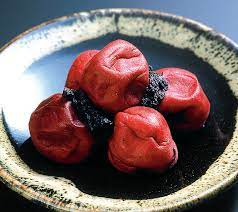

こだわり

北海道産ゆめぴりかを使用しています。ゆめぴりかは、強い粘りを持ち、冷めてもモチモチ感と粒感が際立ち、食べ応えがあるのでおにぎりとして美味しくいただけます。 炊きあがりが柔らかく、艶が出るためつやつやのおにぎりになります。糖の量が多いため豊かな 甘味が感じられ。旨味たっぷりのおにぎりに出来上がります。
具材

当店では四季折々、彩り豊かなお総菜や、旬のこだわり素材を使った多彩なおむすびが登場します。
また、おむすびの具は、常時14種類前後をご用意しています。
定番のおにぎりの具もご用意しております。
毎日しっかりとだしをとり、お店で赤味噌と白味噌を合わせてつくるお味噌汁も自慢の一品です。日替わりの汁物もお楽しみください。
※化学調味料など一切使用していないので安心していただけます。
味
海苔：風味の優れた国産海苔を厳選し、食べやすいように「大きくたすき形」に巻きました。
海水塩：ミネラルを豊富に含んだ沖縄産海水塩を使用。ごはんの甘みと旨みがひきたちます。
お米の工夫
お米をサッと研ぎ、浸水させる時間を作る。こうすることで、お米に水分が入りしっとりとしたお米になります。 お米を炊く際の水を気持ち少なめにします。 土鍋を使うことでお米がふっくらと仕上がります。 炊き上がったらすぐかき混ぜます。空気を含むように優しく丁寧に行うことでお米の風味を維持できます。
にぎりかた
- おにぎりの半分の量のご飯を手に取る
- 具を全体におく
- 残り半分のご飯を上からのせる
- ２〜３回軽く形を整える程度に握る